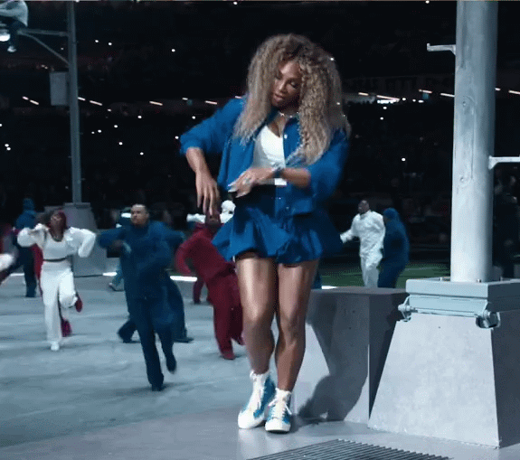

Vie sportive : La reine du tennis
Vie sportive : La reine du tennis
Née en 1981 et élevée à Compton (Californie), Serena Williams a révolutionné le tennis féminin par sa puissance et sa longévité.
- Palmarès : 23 titres du Grand Chelem en simple, 14 en double avec sa sœur Venus et 4 médailles d'or olympiques.
- Domination : 319 semaines numéro 1 mondiale, suivies d'un retour remarqué en double en 2026.
Vie personnelle : Famille et résilience
Mariée depuis 2017 au cofondateur de Reddit, Alexis Ohanian, et mère de deux filles (Olympia et Adira), elle a surmonté de lourdes épreuves : l'assassinat de sa demi-sœur Yetunde en 2003 et une embolie pulmonaire qui a failli lui coûter la vie lors de son accouchement en 2017, juste après avoir remporté l'Open d'Australie enceinte.

- Londres 2012 : Critiquée par la presse pour avoir dansé le Crip Walk à Wimbledon après son titre olympique.
- Roland-Garros 2018 : Sa combinaison médicale noire (catsuit) est jugée « irrespectueuse » par la fédération.
- US Open 2018 : Un arbitre lui retire un jeu entier en finale pour avoir contesté ses avertissements.
Le racisme dans un sport élitiste
Issue d'un quartier populaire afro-américain, Serena a bousculé un milieu historiquement blanc et conservateur. En 2001, huée et visée par des insultes racistes en finale d'Indian Wells, elle boycotte le tournoi pendant 14 ans. Elle a aussi subi des attaques répétées sur son physique musclé et des contrôles antidopage plus fréquents que ses rivales.
La misogynie dans le sport
En tant que femme noire au sommet, elle a affronté un double standard constant : punie plus sévèrement que les hommes pour ses émotions sur le court, et privée de son statut de tête de série après son congé maternité en 2018 — une injustice qui a poussé la WTA à réformer ses règles. Avec Venus, elle a aussi obtenu l'égalité des primes en Grand Chelem.

Patrimoine et affaires
Sa fortune atteint environ 350 millions de dollars en 2026. Outre ses 95 millions de gains en tournois et ses contrats (Nike, Wilson), elle dirige le fonds Serena Ventures (plus de 100 startups financées), une société de production et détient des parts dans les Miami Dolphins et l'Angel City FC.
Engagements sociaux
Elle milite activement pour réduire la mortalité maternelle chez les femmes noires aux États-Unis, finance en priorité des entreprises créées par des femmes et des minorités via Serena Ventures, et soutient l'éducation au Kenya ainsi que la justice sociale.

Entre Drake et Kendrick Lamar
Après une relation médiatisée avec Drake (2011–2015) suivie de tensions musicales où le rappeur a attaqué son mari, Serena a trouvé un allié naturel en Kendrick Lamar, originaire comme elle de Compton. Lors du Super Bowl LIX (2025), elle a dansé le Crip Walk sur le titre « Not Like Us » de Kendrick, transformant une ancienne polémique raciste en triomphe culturel.